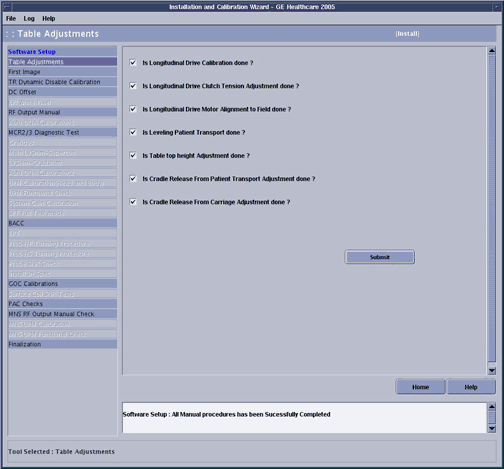

GE Exclusive Use Only
Direction 5440000, Rev# 5
Signa HDxt Service Methods
Module Version 3.0, Version Date 11/1/10
GE Exclusive Use Only |
| Required Persons | Preliminary Reqs | Procedure | Finalization |
|---|---|---|---|
| 1 | Not Applicable | 90 mins | Not Applicable |
During Table adjustment, these tasks must be completed and checked off:
Longitudinal Drive Calibration
Longitudinal Drive Clutch Tension Adjustment
Longitudinal Drive Motor Alignment to Field
Leveling Patient Transport
Table Top Height Adjustment
Cradle Release from Patient Transport
Cradle Release from Carriage
| Item | Qty | Effectivity | Part# | Manufacturer | |
|---|---|---|---|---|---|
| 30-300 lb-in Ratchet-Type Torque Wrench with 3/8 in. Drive | 1 | - | 46-194427P255 | - | |
| 3/8 in. Hex Allen-Head Socket Driver with 5/32 in. Bit | 1 | - | 46-307811P1 | - | |
| Measuring Scale (capable of accurately measuring 800 mm or more) | 1 | - | - | - | |
Insert the Service Key.
Launch the Service Browser (Common Service Desktop).
Click the Calibration tab.
| NOTE: | If in Install or Upgrade mode, click[Install and Calibration Wizard] and on the link, Click here to start this tool. |
If it is required to be completed, the Table Adjustments checklist will be one of the first items listed on the Installation and Calibration Wizard (ICW) screen shown below.
Illustration 1: ICW Table Adjustments

Perform Longitudinal Drive Calibration. When this is complete, check the box next to Is Longitudinal Drive Calibration done?
Perform Longitudinal Drive Motor Alignment to Field. When this is complete, check the box next to Is Longitudinal Drive Motor Alignment to Field done?
Perform Leveling Patient Transport.
Perform Table Top Height Adjustment.
Click [Submit]. This will complete the Table Adjustment section of the ICW.
Return to the Installation and Calibration Wizard for instructions on advancing to the next calibration and for links to other calibration procedures.